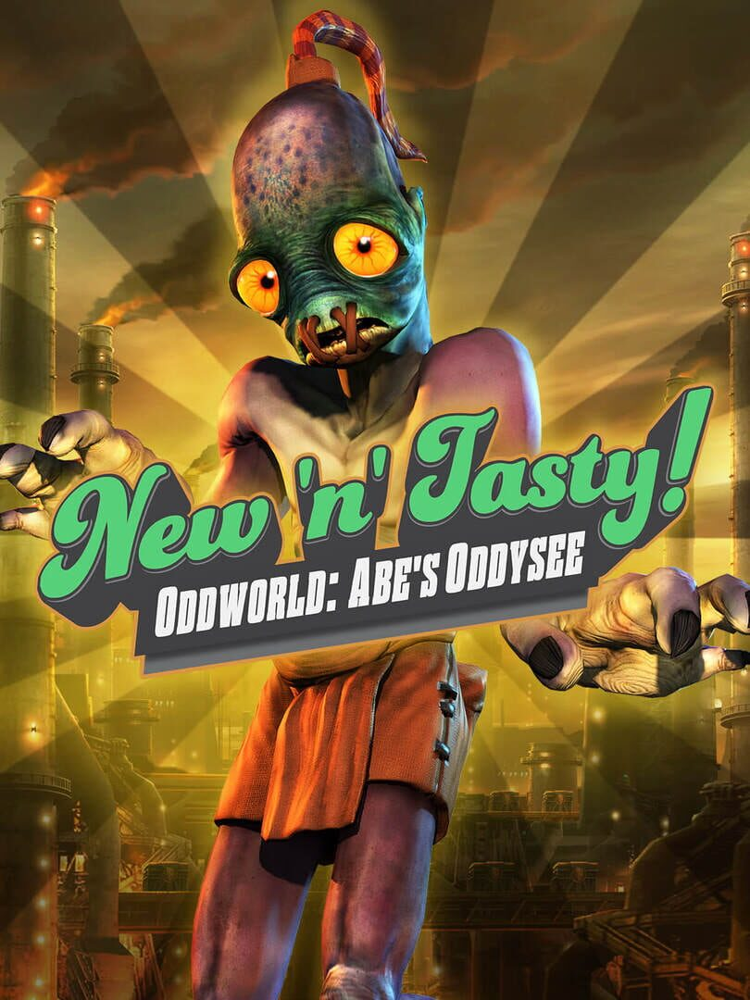

Oddworld: New 'n' Tasty
Oddworld: New 'n' Tasty
Details
|  | |
| Spielzeit | Nicht gespielt |
| Letzte Aktivität | Nie |
| Hinzugefügt | 26.12.2021 21:59:09 |
| Modifiziert | 10.11.2022 12:40:08 |
| Fertigstellungsstatus | Not Played |
| Bibliothek | Steam |
| Quelle | Steam |
| Plattform | PC (Windows) |
| Veröffentlichungsdatum | 25.02.2015 |
| Community Bewertungen | 84 |
| Kritiker Punkte | 86 |
| Benutzerwertung | |
| Genre | Action Adventure Indie |
| Entwickler | Just Add Water (Developments), Ltd. |
| Verleger | Oddworld Inhabitants, Inc. |
| Eigenschaft | Achievements Cloud Saves Controller Support Leaderboards Single Player Steam Karten |
| Links | Communityhub Diskussionen Guides Neuigkeiten Shopseite PCGamingWiki Errungenschaften |
| Tag | |
Beschreibung
Control Help and Tips

Struggling with Abe and the controls?
Tip: One of the quickest ways to make the controls in New 'n' Tasty a little easier is by switching on the two 'old school' control toggles, which are off by default. These tighten up Abe's movement and make lateral hops much easier to pull off.
Once on, Abe will no longer run without the player pressing the 'run' button, and will hop to the side rather than straight up, making mines easier to leap over and distances easier to judge.

Re-mapping the controls:
New 'n' Tasty supports in-game remapping for controllers and keyboards.
To remap a controller, ensure the "Input Method" is set to Controller, and then go to "Button Layout" and select "Xbox 360" at the top to bring up a dropdown. From the dropdown, select "Custom" and then remap as needed.
Supported controllers:
Windows: Xbox 360; Xbox One; DualShock 4, Steam Controller; Logitech F310, F510, F710; XInput compatible. Others may be configured via in-game remapping tool. Please refer to minimum specs for other formats.
About the Game

Back To Oddworld
Explore ancient ruins, dodge carnivorous beasts and avoid trigger-happy guards as Abe, the original Oddworld hero in this lovingly recrafted, built from the ground-up and totally recooked take on the classic adventure Oddworld: Abe's Oddysee.
Once a happy floor waxer in Oddworld's biggest meat processing plant, Abe stumbles across his boss's secret plan to turn the factory's slave labor force into the latest in the RuptureFarms Tasty Treats line of novelty meat snacks. Abe now has to save his own skin from the grinders, but simply escaping the flesh farm is only the start of his Oddysee - for many dangers await Abe on his journey to discover his destiny.
Built from scratch from the ground up, enjoy new breathtaking visuals, enhanced audio and improved, deeper gameplay as New 'n' Tasty reignites the original Oddworld game using the latest next-generation technology.
Amazing new graphics
With art direction from series creator Lorne Lanning, Oddworld: New 'n' Tasty offers a view into Oddworld with fidelity never seen before. Fluid animation, new free-moving cameras and high resolution (up to 4K) visuals make RuptureFarms and the surrounding areas look incredible, creating the Oddworld that Lanning always wanted to see.
Revamped controls
Analog controls offer more subtle control over Abe, and new tricks like free aiming, the ability to drop grenades behind you and also sneak whilst crouching open up new avenues for stealthy tactics and inventive speed-running. Optional 'Old School' controls bring back hopping and digital movement too, so the Oddysee purists can get started with some familiarity.
Brand new areas, brand new secrets
From the murky grime of RuptureFarms to the expansive native lands of the Monsaic Lines, through to the vast temples of Scrabania and Paramonia, Oddworld: New 'n' Tasty boasts new areas, subtle gameplay changes and a few surprises. Fans will recognise the huge meat grinders, Scrab holding pens and cavernous caves, but there's more than enough that's new here to keep you on your toes.